foundation.zurb.com
Mobile First
Semantic Markup
Library of JavaScript Plugins
So We Started Making Stuff
Navigation
Responsive Grid
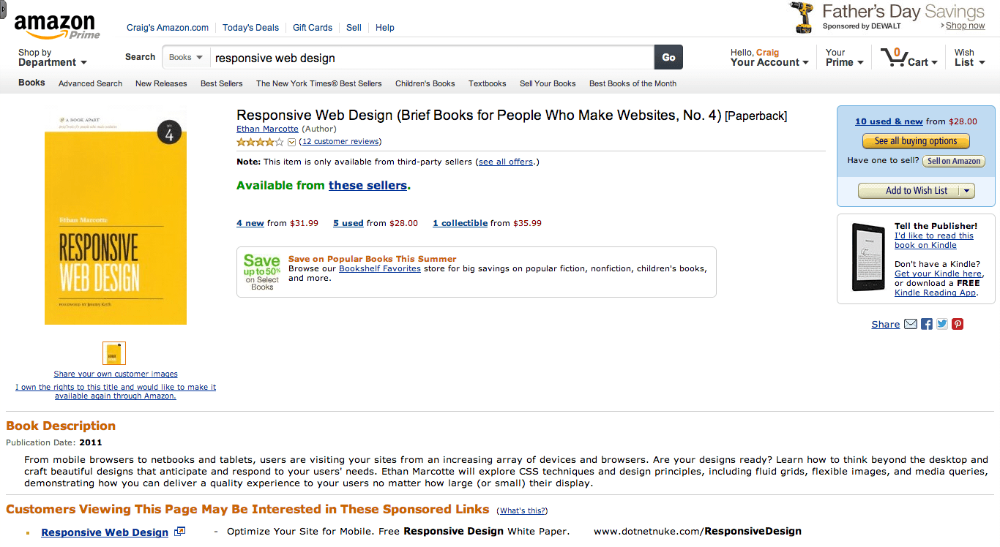
Responsive Grid
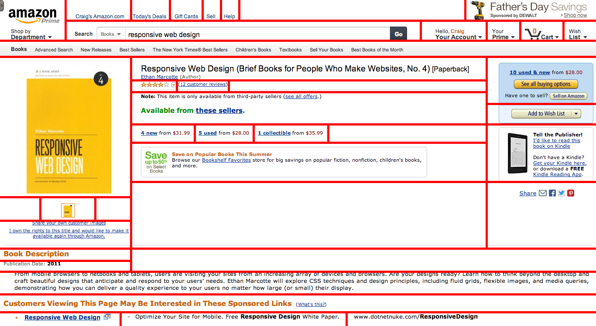
Responsive Grid
Responsive Tables
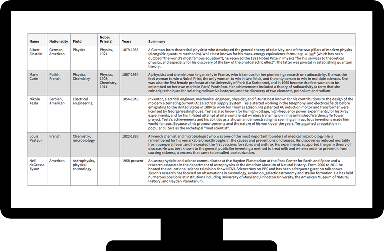
Responsive Tables
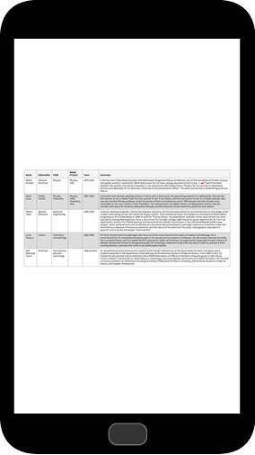
“Thats sounds terrific and everything, but how can I possibly use these super amazing, technologically advanced components on MY sites and apps?”
The New Web Framework
Is Responsive
Is Modern
Is Whimsically Magically Magnificent
Built for New York State
Excelsior
A collaborative, platform, server, and CMS agnostic,
cutting-edge, open-source, responsive web framework.
Excelsior's Goal
To be the best Responsive Web Design Framework ever.
Leveraging talent across NYS agencies to collect, research and implement RWD best practices.
Some Key Features
An easy entry point for beginners
Flexible enough for advanced developers
Reusable and re-skinnable components and patterns
Ongoing state-wide collaboration effort to implement RWD
It's Not Another Standard
Excelsior isn't a walled garden,
...it's essentially yours.
Excelsior Makes RWD Easy
All you need to know is HTML & CSS
Fully documented components
In-depth wiki
But wait, There's More!
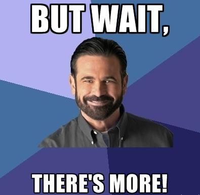
Outdated Techniques and Processes
"Just throw it on the website"
Desktop-first design, separate mobile sites
Plain CSS
Manual file creation
50 stylesheets and JavaScript files per page
Mismanaged source control
Emails and spreadsheets for bugs and changes
×
Were Treated Like The Evil Beasts They Are
YOU SHALL NOT PASS!
Hello, Modern Techniques and Processes
Content Based Design
Multi-Device & Mobile-First
Preprocessed CSS and Build tasks
Minified and Combined Assets
GitHub
GitHub Issues
...and we made it easy to use too!
Next-Gen Browsers and Devices
Fully functional in all major browsers
Chrome, Firefox, Opera, Safari
iPhone, Android 2+, WinPhone 7+
Internet Explorer 8 and Higher
Non-major browsers will still "work"
Serve IE6 & IE7 your mobile or print styles
Some People Might be Thinking...
"My sites MUST look identical across all browsers and fully support IE6 AND IE7!"
I've got three things to say about that:
1. Do you REALLY?
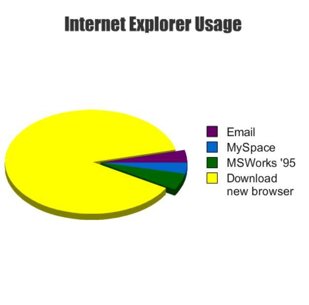
IE 6 is Dead
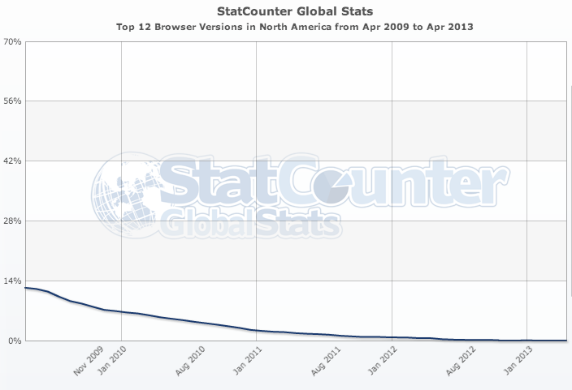
IE 6 = 0.15%
Source: StatCounter
IE 7 Isn't Far Behind
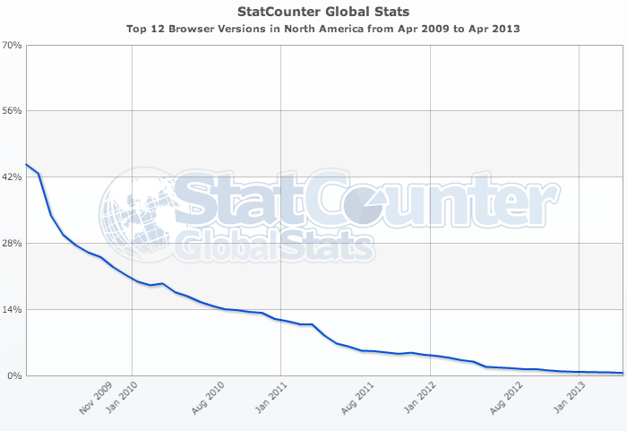
IE 7 = 0.74%
Source: StatCounter
2. Shun the Future for the past?
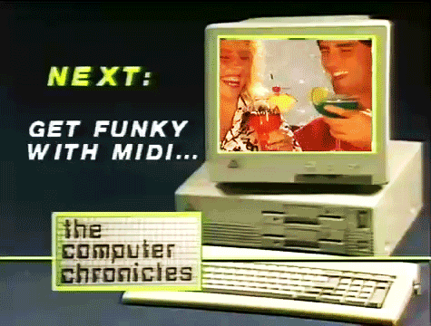
Look Close, You'll See Something
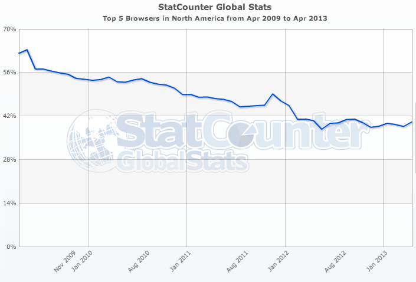
IE Usage 2009-2013
Source: StatCounter
Mobile is Winning
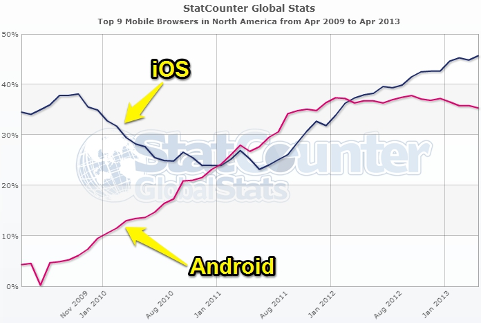
Mobile Usage 2009-2013
Source: StatCounter
3. If, After The Supporting Evidence...
After The Email Back and Forth...
After The...
Crying?
You Could Always Add it!
RWD Doesn't Have to be Hard
Excelsior can help you start out on the right path
Don't reinvent the wheel again
Open-Source
Houston We Have a Problem.
Have Something to Add?
Add support for legacy browsers?
Add a cool new feature that works great?
Contribute back, share your work with the world!

Where Can I See Some RWD Action?
Get Started With RWD Today!
Thanks for Listening
Luke Charde
Department of Labor
Craig Patik
Department of Taxation & Finance
Eric Steinborn
Division of Criminal Justice Services